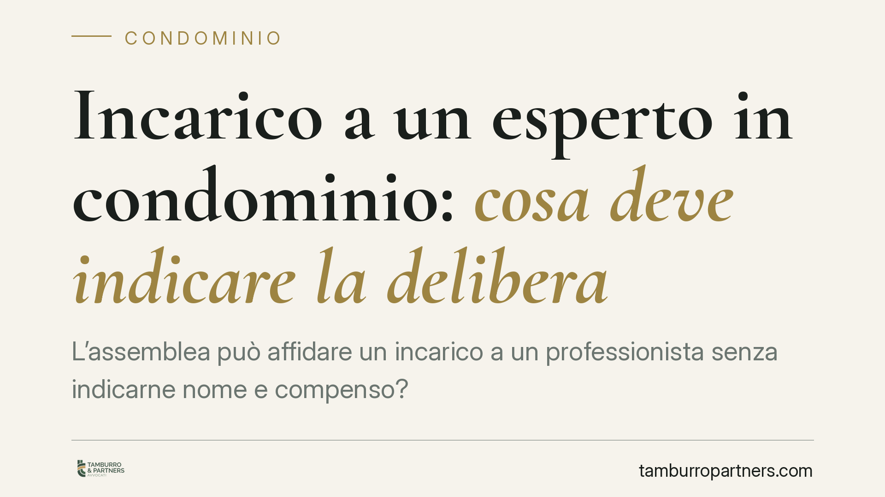

Incarico a un esperto in condominio: cosa deve indicare la delibera
L'assemblea può affidare un incarico a un professionista senza indicarne nome e compenso? Una recente pronuncia di merito risponde di no: la delibera priva di elementi essenziali è nulla per indeterminatezza dell'oggetto. Una decisione che offre indicazioni pratiche su cosa deve contenere, come minimo, ogni delibera che autorizza una spesa professionale.

Il caso
Un condominio conferisce a un esperto fiscale l'incarico di svolgere alcune verifiche. La delibera, però, non indica il nome del professionista, non fissa il compenso né un tetto di spesa, e tace sui criteri di ripartizione tra i condòmini. Una condòmina impugna la decisione.
La questione è tutt'altro che teorica. In molte assemblee capita di votare un "via libera" generico a incarichi professionali, rinviando a un momento successivo la scelta del soggetto e la quantificazione del costo. Una prassi diffusa che, secondo una recente pronuncia di merito, espone la delibera al rischio di nullità.
Inquadramento normativo
Il punto di partenza è la distinzione tra delibere nulle e delibere annullabili, ridisegnata dalle Sezioni Unite della Cassazione (sent. n. 9839 del 2021). In estrema sintesi: sono annullabili i vizi procedurali e formali (ad esempio difetti di convocazione o violazioni di maggioranze), impugnabili entro trenta giorni ai sensi dell'art. 1137 c.c.; sono invece nulle le delibere prive degli elementi essenziali, con oggetto impossibile, illecito o — ed è il caso che qui interessa — indeterminato. La nullità può essere fatta valere senza limiti di tempo.
Una delibera che conferisce un incarico professionale senza individuare il professionista e senza quantificare o delimitare la spesa manca di un oggetto determinato o determinabile. Non è un vizio di forma: è l'assenza di un contenuto minimo che renda la decisione comprensibile e vincolante. Da qui la nullità.
Il quadro va letto insieme all'art. 1130 c.c., che elenca le attribuzioni dell'amministratore. L'amministratore gestisce ed esegue le delibere, ma non può colmare con discrezionalità autonoma i vuoti lasciati dall'assemblea sugli elementi essenziali di una spesa. Se la delibera non dice chi, quanto e come si ripartisce, l'amministratore non ha un titolo chiaro per agire.
Implicazioni pratiche
Per il condominio e per i singoli condòmini il principio ha ricadute concrete.
Una delibera di incarico indeterminata non produce effetti: la spesa deliberata in questi termini può essere contestata e il relativo riparto rischia di essere travolto. Ciò vale anche a distanza di tempo, trattandosi di nullità e non di semplice annullabilità soggetta al termine di trenta giorni.
Per l'amministratore, eseguire un incarico su una base deliberativa lacunosa significa esporsi a contestazioni sulla gestione e sulla legittimità della spesa anticipata o ripartita. La completezza del verbale non è un formalismo: è la condizione che rende la decisione eseguibile e difendibile.
Per il condòmino di minoranza, la pronuncia conferma uno strumento di tutela: davanti a una delibera di spesa generica, non è indispensabile correre contro il termine dei trenta giorni, perché la nullità per indeterminatezza resta rilevabile.
Cosa fare in concreto
- Indicare il nominativo del professionista al momento del voto, o quantomeno i criteri oggettivi per individuarlo, evitando deleghe generiche.
- Fissare il compenso o, in alternativa, un tetto massimo di spesa, così da delimitare l'importo autorizzato.
- Stabilire i criteri di ripartizione della spesa tra i condòmini già in sede di delibera.
- Definire l'ambito dei poteri conferiti, precisando l'oggetto e i limiti dell'incarico.
- Verbalizzare con chiarezza tutti questi elementi: è opportuno un esame tempestivo del verbale, tenendo presente che per i vizi annullabili opera il termine di trenta giorni dall'art. 1137 c.c.
In sintesi
Non basta decidere "se" spendere: l'assemblea deve stabilire anche chi, quanto e come si ripartisce. Una delibera che affida un incarico professionale senza questi elementi essenziali è esposta alla nullità per indeterminatezza dell'oggetto. Un livello di dettaglio che tutela il condominio, orienta l'operato dell'amministratore e riduce il contenzioso.
---
*Contributo informativo a cura di Tamburro & Partners Avvocati - Avv. Giuseppe Tamburro. Non costituisce parere legale.*
Ogni condominio ha una storia a sé.
Se gestisci un'amministrazione e vuoi un confronto su una specifica questione condominiale, scrivi allo studio. Ti rispondiamo entro un giorno lavorativo.